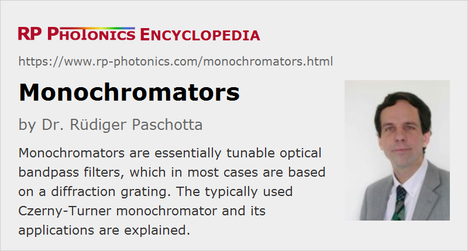

Monochromators
Definition: optical devices which transmit only light in an adjustable small range of optical wavelengths
German: Monochromatoren
Categories: general optics, light detection and characterization, optical metrology
How to cite the article; suggest additional literature
Author: Dr. Rüdiger Paschotta
A monochromator is a kind of tunable optical bandpass filter, which is in most cases tunable concerning the center wavelength of the pass band and possibly also concerning the transmission bandwidth (at least in steps). Light outside the pass band is usually absorbed in the device.
Light Input
An optical monochromator has some kind of input port, which can have different forms:
- For receiving light from free space, it is typically a narrow optical slit, onto which the incoming light should be appropriately focused in the “narrow” direction, using a cylindrical lens if the input beam is collimated, for example.
- Alternatively, the input light may be delivered through an optical fiber. That way, one obtain substantial flexibility, e.g. for placing the monochromator.
Output
The transmitted light is available at the output port, which is also often having the form of a slit, from which relatively divergent light is obtained. In some cases, the output is again coupled into an optical fiber.
Design Requirements
The design of a monochromator should ideally fulfill a number of requirements; the most fundamental ones are:
- wide enough wavelength tunability
- high transmission in the pass band
- strong attenuation of light with any other wavelengths
- independence of the center wavelength on the direction or alignment of the input beam
Typical devices e.g. based on gratings can transmit only 50% of the input power or even substantially less, and they suppress light outside the pass band e.g. by 30 dB, or sometimes substantially more. Their transmission band should depend only weakly on the alignment of the input beam.
Additional useful features can be:
- adjustable bandwidth of the pass band
- a well defined filter function, e.g. with steep edges
- compact and robust design
Czerny–Turner Monochromator with a Diffraction Grating
The classical type of optical monochromator is the Czerny–Turner monochromator, see Figure 1. The input light is focused onto the input slit and therefore divergent after the slit. It is collimated by a curved mirror and hits a diffraction grating, which deflects different wavelength components in slightly different directions. A second curved mirror translates different beam directions into different positions on the exit slit, so that only light in a narrow wavelength region can get through that slit. One may again collimate that light e.g. with an additional cylindrical lens after the monochromator.
The whole setup is placed in a box, containing additional apertures and black shields (not shown in the figure) in order to minimize effects of stray light, which might otherwise get to the output in irregular ways. Such measures are particularly important in cases where very weak light in the presence of intense light at another wavelength needs to be analyzed – for example, in Raman spectroscopy. In some cases, one needs to use a dual monochromator (i.e., two such devices in a sequence) to achieve better suppression. Another solution may be to use a notch filter before the monochromator for attenuating light at the unwanted wavelength.
The diffraction grating is normally placed on a rotational stage; its position determines the center wavelength of the pass band. Some monochromators contain several gratings, often with different line spacings, for addressing different wavelength regions and/or working with different values of the transmission bandwidth. The rotational stage is often motorized, so that it can be computer-controlled. Some devices have a scale for the rotational position, possibly calibrated in nanometers. Simpler monochromators have a micrometer screw, and the user has to translate its scale readings into wavelength values.
Unfortunately, the dependence of pass band wavelength or optical frequency on the rotational angle is nonlinear; that may have to be compensated with software – for example, on a computer or a built-in microprocessor.
Spherical mirrors are actually problematic in conjunction with a large slit height due to their spherical aberrations. One may therefore either use toroidal collimating mirrors (a kind of aspheric optics) or curved slits to avoid such problems.
Typical achievable wavelength resolutions of such monochromators are about 0.01 nm to 0.1 nm. Devices with particularly high resolutions tend to be larger (using mirrors with long focal length and a grating with larger area); they also need to be built with high mechanical and thermal stability. Within some limits, relatively compact setups can be obtained by folding the beam path.
There are modified types of monochromators, for example the Fastie–Ebert monochromator wit a common collimator/refocusing mirror, and devices with two gratings for better resolution.
The quality of the diffraction grating can be important for the performance:
- Its diffraction efficiency determines the power losses.
- If the diffraction is not concentrated on one particular diffraction order (typically the first one), one may not only achieve less power throughput, but also get parasitic transmission at additional wavelengths, leading to “ghost signals”; that is particularly relevant for broadband input light. In that respect, blazed gratings (a kind of ruled gratings) are better than holographic gratings.
- Light scattering on the grating should be as weak as possible, because otherwise one obtains some background transmission for any wavelengths. In that respect, holographic gratings are usually best. One may also suppress effects from additional diffraction orders with an additional prism.
Based on these considerations, one can decide which type of diffraction grating is most appropriate for a particular application.
Prism Monochromators
Similar monochromators as discussed above can be realized with a prism instead of a diffraction grating; the transmission bandwidth is then substantially larger due to the smaller angular dispersion of a prism. On the other hand, a prism causes lower power losses and can be used in wider wavelength regions, e.g. for ultraviolet light.
Optical Resonators
Within a very limited range of optical frequencies, an optical resonator can also serve as a monochromator, transmitting light only in resonance. The width of the usable frequency range is the free spectral range, which depends on the around-trip time of light in the resonator.
Applications of Monochromators
In the early times of optics, monochromators were often used for obtaining quasi-monochromatic light. This was of course very inefficient in conjunction with a broadband light source, as required for generating widely tunable monochromatic light. For a fixed wavelength, one could use certain low-pressure gas discharge lamps and transmit one of the prominent emission lines. Nowadays, that application is somewhat less common, because it is often better to use a laser as quasi-monochromatic light source. Still, the principle is used e.g. in spectrophotometers for measuring the wavelength-dependent absorbance or reflectance of a sample, since a wideband tunable laser is more difficult to make and use and is more expensive.
Monochromators are often used in spectroscopy. A common application is in combination with a photodetector; with such a setup one can record the optical spectrum of a light source by recording the transmitted intensity while scanning the transmission band (scanning spectrometer). Without the exit slit, a monochromator may be used in a spectrograph.
Suppliers
The RP Photonics Buyer's Guide contains 25 suppliers for monochromators. Among them:
Questions and Comments from Users
Here you can submit questions and comments. As far as they get accepted by the author, they will appear above this paragraph together with the author’s answer. The author will decide on acceptance based on certain criteria. Essentially, the issue must be of sufficiently broad interest.
Please do not enter personal data here; we would otherwise delete it soon. (See also our privacy declaration.) If you wish to receive personal feedback or consultancy from the author, please contact him e.g. via e-mail.
By submitting the information, you give your consent to the potential publication of your inputs on our website according to our rules. (If you later retract your consent, we will delete those inputs.) As your inputs are first reviewed by the author, they may be published with some delay.
See also: monochromatic light, tunable optical filters, spectrometers, spectrophotometers, spectrographs, diffraction gratings, prisms
and other articles in the categories general optics, light detection and characterization, optical metrology
|  |
If you like this page, please share the link with your friends and colleagues, e.g. via social media:
These sharing buttons are implemented in a privacy-friendly way!